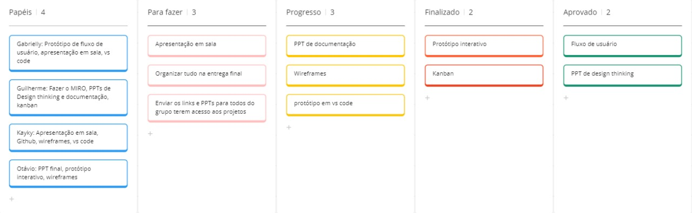

Introdução
O gerenciamento financeiro é uma habilidade essencial tanto para indivíduos quanto para empresas. No entanto, muitas vezes, a complexidade das finanças pessoais e corporativas pode levar a um estado de descontrole financeiro. Este trabalho tem como objetivo apresentar uma análise do descontrole financeiro, focando em como softwares específicos podem ajudar a identificar, gerenciar e corrigir esses problemas. Com a crescente digitalização, ferramentas de software têm se tornado indispensáveis para o gerenciamento eficaz das finanças. No entanto, mesmo com essas ferramentas, ainda é comum ver casos de má gestão financeira que podem levar a consequências graves, como dívidas excessivas, falência empresarial e estresse pessoal. Este estudo busca entender as causas do descontrole financeiro e como soluções tecnológicas podem ser desenvolvidas para diminuir esses riscos. Ao longo deste trabalho, será explorado o desenvolvimento de um software específico para auxiliar no controle financeiro, destacando suas funcionalidades principais, benefícios, desafios enfrentados durante o desenvolvimento e a sua aplicabilidade prática no dia a dia de seus usuários. Por meio de uma análise detalhada, pretende-se mostrar que, com o uso adequado de ferramentas tecnológicas, é possível alcançar uma gestão financeira mais eficiente, prevenindo problemas futuros e promovendo a saúde financeira.
Informações Gerais
- Projeto:(De$)_controle
- Repositório GitHub: G6 - Descontrole financeiro
- Membros da equipe:
Contexto
Problema
O descontrole financeiro é um problema amplamente difundido em nossa sociedade, afetando especialmente jovens e jovens adultos. Esse problema muitas vezes é desencadeado por impulsividade e falta de controle sobre os gastos. Para abordar essa questão, uma aplicação pode ser desenvolvida para integrar-se às contas bancárias dos usuários, oferecendo um gerenciamento mais eficaz dos gastos. Essa solução visa fornecer ferramentas e insights para ajudar os usuários a entenderem melhor seus padrões de consumo e a tomarem decisões financeiras mais conscientes.
O problema a ser resolvido é a falta de controle financeiro pessoal. Muitas pessoas não conseguem gerenciar adequadamente seus gastos, o que pode resultar em endividamento e dificuldades financeiras. Este problema é exacerbado pela falta de educação financeira, onde o entendimento sobre gestão de dinheiro é limitado. O **Des_controle** será utilizado em um contexto pessoal, com tecnologias acessíveis, permitindo que o usuário gerencie suas finanças por meio de dispositivos móveis e computadores. A aplicação não apenas registra os gastos, mas também analisa os padrões de consumo, identificando períodos de maior risco financeiro.
Objetivos
O objetivo geral deste trabalho é desenvolver um software para solucionar o problema do descontrole financeiro, oferecendo aos usuários uma ferramenta eficaz para gerenciar seus gastos de forma mais consciente e responsável. Para alcançar esse objetivo, são estabelecidos os seguintes objetivos específicos:
1. Implementar um sistema de monitoramento de gastos: Desenvolver algoritmos e funcionalidades que permitam ao software acompanhar os gastos dos usuários em tempo real, fornecendo atualizações regulares sobre o saldo disponível e alertas quando os gastos ultrapassarem determinados limites pré-definidos.
2. Integrar um mecanismo de controle de gastos: Criar uma funcionalidade que permita ao usuário definir metas de gastos mensais e estabelecer limites para categorias específicas de despesas. Quando os gastos se aproximarem desses limites, o software deverá gerar alertas visuais ou pop-ups para notificar o usuário e, se necessário, bloquear temporariamente novas transações até que o problema seja resolvido. Esses objetivos específicos visam proporcionar aos usuários uma experiência intuitiva e eficaz no controle de suas finanças pessoais, ajudando-os a identificar e corrigir padrões de gastos problemáticos antes que se tornem sérios problemas financeiros
Justificativa
A motivação para trabalhar com esta aplicação surge da compreensão das profundas consequências do descontrole financeiro na vida das pessoas, especialmente dos jovens e jovens adultos. Uma das principais causas desse descontrole é o impulso gerado pela ansiedade, obsessão e falsa necessidade de consumir, muitas vezes associados a gatilhos emocionais relacionados a experiências passadas de privação ou restrição financeira.
Ao escolher os objetivos específicos, levamos em consideração a necessidade de abordar esses gatilhos emocionais e comportamentais que levam ao descontrole financeiro. O primeiro objetivo de implementar um sistema de monitoramento de gastos permitirá aos usuários uma visão clara e atualizada de seus hábitos de consumo, ajudando-os a identificar padrões problemáticos de gastos.
O segundo objetivo de integrar um mecanismo de controle de gastos visa oferecer aos usuários uma ferramenta proativa para lidar com esses impulsos emocionais, permitindo-lhes estabelecer limites claros para seus gastos e receber alertas imediatos quando estiverem se aproximando desses limites.
Além disso, o uso de questionários, entrevistas e dados estatísticos pode fornecer insights valiosos sobre os comportamentos financeiros dos usuários, ajudando-nos a adaptar melhor a aplicação às suas necessidades específicas e aprimorar sua eficácia na promoção de hábitos financeiros saudáveis.
Público-alvo
1. Jovens em transição para a vida adulta: Este grupo inclui indivíduos que recentemente começaram a ter acesso ao seu próprio dinheiro e liberdade financeira, muitas vezes sem uma educação financeira adequada. Eles podem enfrentar desafios ao lidar com essa nova responsabilidade e podem ser mais propensos a comportamentos impulsivos de gastos. 2. Pessoas com falta de controle financeiro abusivo: Esta categoria engloba aqueles que enfrentam sérios problemas de descontrole financeiro, o que pode representar um perigo para sua saúde financeira e bem-estar geral. Eles podem estar em busca de soluções eficazes para lidar com seus hábitos de gastos problemáticos e necessitam de uma abordagem mais direta e personalizada. 3. Indivíduos que não sabem gerir seu dinheiro devido à impulsividade: Este grupo abrange pessoas de todas as idades que têm dificuldade em gerenciar seu dinheiro devido a comportamentos impulsivos de gastos. Eles podem não ter uma compreensão clara de seus hábitos de consumo ou da importância do controle financeiro, mas estão abertos a ferramentas e recursos que os ajudem a melhorar sua situação financeira.
Concepção (Design Thinking)
Detalhes do processo de discovery do projeto.
O processo de descoberta começou com entrevistas com jovens adultos de 18 a 25 anos, revelando que muitos enfrentam problemas financeiros devido a um histórico de restrição financeira na infância. Identificamos o descontrole financeiro como um problema central, causado pela obsessão em gastar sem considerar as consequências. Nosso objetivo é desenvolver uma aplicação que ajude os usuários a controlar impulsos de gastos, promovendo hábitos financeiros saudáveis. A proposta de solução inclui um aplicativo móvel com recursos de monitoramento de gastos, alertas de gastos excessivos e controle de orçamento.
Processo de Design Thinking
O arquivo que se segue apresenta o resultado desse processo.
Apresente o processo de Design Thinking realizado pelo grupo e documentado por meio do software Miro. No documento apresentado, devem ser incluídos: (1) a matriz CSD, (2) o mapa de stakeholders, (3) as personas, (4) as respectivas propostas de valor e (5) o processo de ideação identificando as ideias levantadas e sua priorização.
Especificações do Projeto
Documentação das especificações do projeto.
O software de gestão financeira foi desenvolvido com o objetivo de auxiliar os usuários a manterem suas finanças sob controle de forma simples e eficiente. Ele possui uma página principal que exibe mensagens motivacionais e dicas financeiras geradas de forma randômica a cada acesso ou atualização. Além disso, permite a adição de registros de entradas (receitas) e saídas (despesas) financeiras, onde o usuário pode especificar detalhes como descrição, valor e data da transação. Um carrossel informativo também está presente, exibindo informações úteis e atualizações sobre finanças pessoais, economia e dicas de administração financeira.
O software inclui uma página dedicada à visualização de gráficos, onde o usuário pode visualizar suas entradas e saídas financeiras ao longo do tempo. Esses gráficos podem ser filtrados por períodos como diário, semanal, mensal ou anual, proporcionando uma análise detalhada das finanças. Além disso, há uma página de metas financeiras, onde os usuários podem definir objetivos, como economizar uma certa quantia de dinheiro em um determinado período, e acompanhar o progresso em relação às metas estabelecidas.
Para fornecer suporte adicional, o software apresenta perfis de profissionais das áreas de administração, psicologia e economia, oferecendo aos usuários acesso a informações e aconselhamentos especializados. Também possui um chat integrado, permitindo a comunicação direta com esses profissionais para tirar dúvidas e obter orientações personalizadas.
Outra funcionalidade importante é o cadastro de faturas de cartão de crédito. Os usuários podem registrar o valor da fatura juntamente com o mês correspondente, permitindo um acompanhamento detalhado dos gastos e evitando surpresas desagradáveis com dívidas inesperadas.
Requisitos Funcionais:
Os requisitos funcionais do software incluem a capacidade de adicionar, editar e excluir entradas e saídas financeiras; gerar mensagens randômicas na página principal; exibir um carrossel informativo; visualizar gráficos financeiros filtrados por diferentes períodos; definir e acompanhar metas financeiras; exibir perfis de profissionais de administração, psicologia e economia; integrar um chat para comunicação direta com esses profissionais; e registrar faturas de cartão de crédito com seus respectivos meses.
Requisitos Não Funcionais:
Os requisitos não funcionais garantem que o software seja eficiente, seguro e fácil de usar. O software deve apresentar uma interface intuitiva e responsiva, garantindo uma boa experiência do usuário em diferentes dispositivos e tamanhos de tela. Deve ser capaz de processar e armazenar dados de forma segura, protegendo as informações financeiras e pessoais dos usuários contra acessos não autorizados. A performance do sistema deve ser alta, com tempos de resposta rápidos mesmo com grandes volumes de dados. Além disso, o software deve ser escalável, permitindo a adição de novas funcionalidades e o aumento no número de usuários sem comprometer o desempenho. A manutenção e atualização do software também devem ser fáceis, permitindo correções de bugs e melhorias contínuas sem interrupções significativas no serviço. Com essas funcionalidades e requisitos, o software visa promover uma gestão financeira mais eficiente e consciente, ajudando os usuários a alcançarem uma saúde financeira sustentável..Histórias de Usuários
Com base na análise das personas foram identificadas as seguintes histórias de usuários:
Julia: Julia tem 18 anos, é recém formada no ensino médio, nasceu em uma cidade grande, onde morou durante toda a vida em um bairro suburbano com seus pais e irmãos. Cursou todo o ensino básico em uma escola pública local. Começou a trabalhar aos 16 anos para ajudar em casa. Ao se formar não conseguiu ingressar no ensino superior, pois devido a necessidade de trabalhar em tempo intregral e o fato de não ter sido aprovada em nenhuma universidade pública, lhe falta tempo e condições financeiras para realizar esse sonho. Por causa de algumas privações sofridas na infância, Julia não consegue controlar seus impulsos de gastos, tem a necessidade de gastar seu dinheiro suprindo anseios antes não realizados. Além disso, devido ao seu hobby que são as redes sociais, sofre uma grande influência das mídias para compras. A persona possui em seus traços de personalidade impulsividade, carisma, uma boa comunicação. Sofre com ansiedade, o que pode ser contabilizado como um fator potencializador de gastos.
Pedro: Pedro é tem 21 anos, é estudante universitário, nasceu em uma cidade grande, mora em um bairro residencial. Teve acesso a uma educação de qualidade, começou a trabalhar aos 19 anos para comprar as próprias coisas, não possui porém a responsabilidade de arcar com despesas domésticas. Pedro sofre uma fortissíma influência das mídias digitais, que são suas maiores influenciadoras para o gasto indiscriminado. Além disso, gasta muito com fast food, até 4 vezes na semana. Seu maior sonho é ter a própria casa e o que o impede de realizá-lo é a forma como gerencia suas finanças. Seu hobby é passar tempo nas redes sociais.
João: João tem 23 anos, é estudante universitário, nasceu no estado de São Paulo e por volta dos 15 anos se mudou para Minas Gerais, onde passou a residir na capital. Começou a trabalhar de forma autonôma aos 18 anos para pagar a faculdade e seus lazeres. É um jovem comunicativo, carismático e tem muitos amigos. Seus hobbys são jogar videogame e sair para festas com seus amigos, onde costuma gastar boa parte de seu dinheiro, sendo a fonte maioral de seus gastos. Além disso possui um carro, que é sua segunda maior fonte de gastos. Seu maior sonho é comprar um apartamento, o que poderia ter conquistado se tivesse controle maior sobre seus gastos.
EU COMOPersona usuário(a) |
QUERO/PRECISOQue o site funcione como ferramenta prática que possa ser encaixado na minha rotina.
|
PARAQue assim eu consiga ter controle sobre meus gastos e ganhos, consiga ter meus impulsos dominados e gastar menos para realizar meus sonhos.> |
|---|---|---|
| Usuário do sistema | Registrar meus gastos | Ver onde estou gastando mais |
| Administrador | Alterar permissões | Permitir que possam administrar contas |
Requisitos
As tabelas que se seguem apresentam os requisitos funcionais e não funcionais que detalham o escopo do projeto.

Com base nas Histórias de Usuário, enumere os requisitos da sua solução. Classifique esses requisitos em dois grupos:
- Requisitos Funcionais (RF): correspondem a uma funcionalidade que deve estar presente na plataforma (ex: cadastro de usuário).
- Requisitos Não Funcionais (RNF): correspondem a uma característica técnica, seja de usabilidade, desempenho, confiabilidade, segurança ou outro (ex: suporte a dispositivos iOS e Android).
Lembre-se que cada requisito deve corresponder à uma e somente uma característica alvo da sua solução. Além disso, certifique-se de que todos os aspectos capturados nas Histórias de Usuário foram cobertos.
Requisitos Funcionais
| ID | Descrição do Requisito | Prioridade |
|---|---|---|
| RF-001 | Permitir que o usuário adicione suas entradas e saídas financeiras | ALTA |
| RF-002 | Emitir um gráfico com suas entradas e saídas | ALTA |
| RF-003 | Poder cadastrar mensagens de motivações. | BAIXA |
| RF-003 | Adição de metas | ALTA |
| RF-003 | Um chat ao vivo com outros usuários. | BAIXA |
| RF-003 | Cadastro e pesquisa de contato de profissionais | ALTA |
| RF-003 | Adição do valor da fatura do cartão de crédito | ALTA |
Requisitos Não-Funcionais
| ID | Descrição do Requisito | Prioridade |
|---|---|---|
| RNF-001 | O sistema deve ter fácil manutenção | MÉDIA |
| RNF-002 | Deve ser intuitivo e fácil de ser utilizado | ALTA |
Projeto de Interface
Artefatos relacionados com a interface e a interacão do usuário na proposta de solução.
Apresente a ideia de interface que está sendo prevista para o projeto. Inclua os wireframes, o user/screen flow e o protótipo interativo.
User/Screen Flow e Protótipo interativo
Artefatos relacionados com a interface e a interacão do usuário na solução proposta.
O fluxo de usuário (User Flow) é uma técnica que permite ao desenvolvedor mapear todo fluxo de telas do site ou app. Essa técnica funciona para alinhar os caminhos e as possíveis ações que o usuário pode fazer junto com os membros de sua equipe.
Um protótipo interativo apresenta o projeto de interfaces e permite ao usuário navegar pelas funcionalidades como se estivesse lidando com o software pronto. Veja o exemplo a seguir.
Wireframes
Protótipo de telas do sistema em baixa fidelidade (rascunhos).
Metodologia
Detalhes sobre a organização do grupo e o ferramental empregado.
A metodologia adotada por nosso grupo foi o Framework Scrum, dividimos as tarefas entre o grupo, fizemos reuniões diárias e sempre mantivemos contato por um grupo no Whatsapp e servidor no Discord. A comunicação durante esse processo foi crucial para gestão das tarefas e um resultado satisfatório. Ferramentas empregadas: Miro, Figma, Marvelapp, excalidraw, PowerPoint, vscode, GitHub. Divisão de tarefas: Gabrielly:Wireframe / GitHub; Kayky:User flor / GitHub; Otavio:Protótipo interativo / Slides; Guilherme:Miro/documentação do projeto.
Nesta Sprint (1), o projeto foi documentado, identicamos nossas personas e baseamos a estrutura de dados do software nas demandas dos mesmos. Foi criado um wireframe e protótipos interativos para vizualição do projeto.
**Gabrielly**:
Wireframe, GitHub, página de adição de metas, página de cadastro de profissionais, slides, vídeo.
**Kayky**:User flow, GitHub, página principal do projeto, criação de mensagens aleatórias, controle de fatura e saldo, documentação, commits no GitHub.
**Guilherme**:Miro, documentação do projeto, PDF de Design Thinking, página de extrato bancário, gráfico de saldo e fatura, unificação do site, correção de conflitos, citation.cff.
**Otávio**:Protótipo interativo/ Apresentação de slides/ Tela de perfil do usuário/ Chat em tempo real/ Funcionalidade da tela de cadastro / Alteração dos dados do usuário em relação ao login.
Ferramentas
Relação de ferramentas empregadas pelo grupo durante o projeto./
Liste as ferramentas empregadas no desenvolvimento do projeto, justificando a escolha delas, sempre que possível. Inclua itens como: (1) Editor de código, ferramentas de comunicação, ferramentas de diagramação, plataformas de hospedagem, entre outras.
| Ambiente | Plataforma | Link de Acesso | |
|---|---|---|---|
| Processo de Design Thinking | Miro | https://miro.com/app/board/uXjVKdBzZD8=/ | |
| Repositório de código | GitHub | github | |
| Hospedagem do site | Json server | https://www.npmjs.com/package/json-server | |
| Protótipo Interativo | MavelApp ou Figma | Para celular | Para Pc |
| Comunicação | Discord ou Whatsapp | Discord e WhatsApp | |
| Wireframe | Excalidraw | Wireframe | |
| Editor de Codigo | Vscode | Para Pc |
Gestão do Projeto
Divisão de papéis no grupo e apresentação da estrutura da ferramenta de controle de tarefas (Kanban).
Apresente a divisão de papéis e tarefas entre os membros do grupo. Informe quem é o Scrum Master, o Product Owner e os desenvolvedores. Informe também quem é o responsável pela documentação do projeto.
Gabrielly: wireframe/ GitHub/página de adição de metas/ página de cadastro de profissionais/slides,vídeo. Kayky: User flow/ GitHub/ pagina principal do projeto/ criação de mesagens aleatorias/ controle de fatura e saldo/documentação/ commits no github. Guilherme: Miro / Documentação do projeto/ pdf de design thinking/página de extrato bancário/ gráfico de saldo e fatura/ unificação do site/ correção de conflitos e citation.cff. Otavio: Protótipo interativo/ Apresentação de slides/ Tela de perfil do usuário/ Chat em tempo real/ Funcionalidade da tela de cadastro / Alteração dos dados do usuário em relação ao login.
Todos foram scrum master, Project Owner.
Controle de Versão
Estrutura do fluxo de trabalho no ambiente do GitHub.
Discuta como a configuração do projeto foi feita na ferramenta de versionamento (GitHub). Exponha como a gerência de tags, merges, commits e branchs é realizada. Discuta como a gerência de issues foi realizada.

Gerenciamento de Versionamento
Para garantir a integridade, rastreabilidade e colaboração eficaz no desenvolvimento do nosso software de gestão financeira, utilizamos o Git como sistema de controle de versão e hospedamos o repositório no GitHub. O Git mantém um histórico detalhado de todas as modificações, permitindo rastrear alterações, reverter versões e entender a evolução do software. Ele facilita a colaboração, permitindo que vários desenvolvedores trabalhem simultaneamente em suas próprias cópias do repositório. Branches são usadas para isolar novas funcionalidades ou correções de bugs, que são desenvolvidas e testadas de forma independente antes de serem integradas ao código principal. O GitHub aprimora nosso fluxo de trabalho com pull requests para revisão de código e discussão de mudanças, promovendo a qualidade do código e a colaboração contínua. Ferramentas de integração contínua e entrega contínua (CI/CD) automatizam testes e deploys, garantindo que cada mudança seja rigorosamente testada antes de ser disponibilizada aos usuários. Seguimos práticas recomendadas, como commits frequentes com mensagens claras e a criação de branches para novas funcionalidades, garantindo um código-base limpo e estável. Em resumo, o uso do Git e do GitHub é fundamental para a gestão eficaz do nosso projeto, proporcionando um ambiente de desenvolvimento colaborativo, seguro e eficiente, permitindo a entrega contínua de um produto de alta qualidade.
Main: Branch principal, onde a versão estável do projeto é mantida. Develop: Branch de desenvolvimento, onde novas funcionalidades são integradas antes de serem movidas para a branch principal. Feature Branches: Criadas para cada nova funcionalidade ou correção. Exemplo de nomenclatura: feature/nova-funcionalidade ou fix/erro-x.
Commits Mensagens Claras: Cada commit possui uma mensagem clara e descritiva, seguindo o formato: tipo: descrição curta. Tipos de Commits: Incluem feat (nova funcionalidade), fix (correção de bug), docs (documentação), entre outros.
Merges Pull Requests: Antes de qualquer merge, um pull request é aberto para revisão de código. Code Review: Pelo menos um membro do grupo revisa o código, garantindo a qualidade e a conformidade com os padrões do projeto. Merges: Utilização de merges sem fast-forward para preservar o histórico de commits.
Tags Versões: Tags são criadas para marcar versões estáveis, seguindo a convenção de versionamento semântico, por exemplo, v1.0.0. Lançamentos: As tags são utilizadas para criar releases no GitHub, onde changelogs e notas de versão são detalhados.
Gerenciamento de Issues Criação: As issues são criadas para todas as tarefas, funcionalidades ou bugs. Classificação: Utilização de labels para categorizar issues, como bug, enhancement, documentation. Atribuição: Cada issue é atribuída a um membro da equipe, responsável pela sua resolução. Milestones: Uso de milestones para agrupar issues relacionadas a um objetivo específico do projeto. Fechamento: As issues são fechadas automaticamente quando um pull request relacionado é mergeado, facilitando o rastreamento de progresso.
Workflow Geral Criação de Issue: Uma nova issue é aberta para qualquer tarefa. Branching: Uma nova branch é criada a partir de develop para trabalhar na issue. Desenvolvimento: O código é desenvolvido e os commits são realizados na branch de feature. Pull Request: Após o desenvolvimento, um pull request é aberto para revisão. Code Review: Revisão do código por outro membro do grupo. Merge: Após aprovação, o pull request é mergeado na branch develop. Deploy: Versões estáveis são mergeadas na branch main e tags são criadas.
Solução
Esta seção apresenta todos os detalhes da solução criada no projeto.
Apresente cada uma das funcionalidades que a aplicação fornece tanto para os usuários quanto aos administradores da solução.
## Funcionalidades para Usuários
1-A página principal do software apresenta mensagens randomizadas para incentivar o usuário a manter o controle financeiro. Essas mensagens são projetadas para oferecer dicas úteis e motivacionais, ajudando os usuários a refletirem sobre seus hábitos de consumo.
Registro de Entradas e Saídas:2-O software permite aos usuários adicionar facilmente entradas e saídas financeiras, proporcionando um controle detalhado sobre suas finanças. Cada transação registrada é automaticamente categorizada e armazenada para facilitar o acompanhamento e a análise financeira.
Carrossel Informativo:3-Um carrossel informativo na página principal oferece atualizações sobre as últimas notícias financeiras, dicas de economia e tendências de mercado. Essa funcionalidade mantém os usuários informados e preparados para tomar decisões financeiras mais inteligentes.
Gráficos Financeiros:4-Uma página dedicada a gráficos financeiros permite aos usuários visualizar suas entradas e saídas de maneira intuitiva e visual. Gráficos de barras, linhas e pizzas mostram a distribuição e a evolução dos gastos e receitas ao longo do tempo, ajudando na análise e planejamento financeiro.
Definição de Metas:5-Os usuários podem definir metas financeiras personalizadas, como economizar uma certa quantia por mês ou reduzir gastos em uma categoria específica. O software monitora o progresso dessas metas e oferece recompensas motivacionais ao atingi-las.
Apresentação de Profissionais:6-O software apresenta perfis de profissionais das áreas de administração, psicologia e economia. Os usuários podem acessar conselhos e artigos desses especialistas, ajudando a melhorar sua gestão financeira e seu bem-estar emocional.
Chat de Suporte:7-Uma funcionalidade de chat permite que os usuários entrem em contato com outros de longa data para obter suporte sobre o funcionamento do Software.
Cadastro de Faturas de Cartão de Crédito:8-Os usuários podem registrar as faturas do cartão de crédito, especificando o valor e o mês de referência. O software ajuda a monitorar e comparar esses dados com despesas atuais, proporcionando uma visão clara do uso do crédito ao longo do tempo.
Video do Projeto
O vídeo a seguir traz uma apresentação do problema que a equipe está tratando e a proposta de solução.
O video de apresentação é voltado para que o público externo possa conhecer a solução. O formato é livre, sendo importante que seja apresentado o problema e a solução numa linguagem descomplicada e direta.
Funcionalidades
Esta seção apresenta as funcionalidades da solução.
(1)Cadastro de perfil. (2)Envio do valor da fatura do cartão de crédito. (3)Entradas e saídas bancárias. (4)Metas. (5)Profissionais. (6)Gráfico. (7)Sugestão de conteúdo. (8) Edição de perfil. (9) CHAT. (10) Mensagens randomicas.
Inclua, para cada funcionalidade, itens como: (1) titulos e descrição da funcionalidade; (2) Estrutura de dados associada; (3) o detalhe sobre as instruções de acesso e uso.
Funcionalidade 1 - Cadastro de usuários
Permite a inclusão, leitura, alteração e exclusão de dados pessoais para o sistema
- Estrutura de dados: { "apelido": "123abc", "name": "João Silva", "email": "joao.silva@example.com", "cpf": "111.222.333-44", "senha": "gnndgd@@", } Contatos
- Instruções de acesso:
- Abra o site e adicione suas informações
- Coloque seu melhor email, seu nome, seu apelido, seu cpf e sua senha, confirme a senha
- Em seguida, escolha a opção cadastro
- Estrutura de dados: { "Mês": "Janeiro", "Extrato": "500,50R$", } Extrato bancário
- Instruções de acesso:
- Abra o site e entre em gastos
- Digite o mês que deseja atualizar o extrato
- Em seguida, digite o valor e clique em "fazer upload"
- Estrutura de dados: { "Saldo": "3000,00R$", "Fatura": "500,50R$", } Entradas e saidas
- Instruções de acesso:
- Abra o site, e já na tela inicial, digite o valor do saldo e fatura
- Após ambos digitados, clique em enviar
- Pronto, os valores já vão aparecer atualizados na sua tela
- Estrutura de dados: { "Meta": "Comprar carro", "Valor": "300.000R$", } metas
- Instruções de acesso:
- Abra o site e entre em metas
- Entre no símbolo "+"
- Escreva sua nova meta
- Para repetir o processo, pressione novamente o símbolo "+"
- Estrutura de dados: { "Profissional": "Psicologia", "Nome": "Lorrayne Cardoso", "Número de telefone": "31 99234-6789", "Cidade":"Belo Horizonte", } Profissionais
- Instruções de acesso:
- Abra o site na tela inicial e pressione "Profissionais"
- Cadastre que tipo de profissional você é, com todos os dados corretos
- Estrutura de dados: { "Entradas": "3000,00R$", "Saídas": "200,00R$", } Gráfico
- Instruções de acesso:
- Abra o site na tela principal e clique em gráfico
- Digite os valores da movimentação bancária
- Veja sua evolução
- Estrutura de dados: { "Video": "https://www.youtube.com/watch?v=C5lXenG8r0I", } Sugestão de conteúdo
- Instruções de acesso:
- Abra o site e role até sugestão de conteúdos
- Em seguida, escolha uma opção, clique e será redirecionado para a página em questão
- Estrutura de dados: { "Nome": "Guilherme", "Sobrenome": "Ribeiro", "Idade": "18", "Cidade": "Contagem", "Email": "1505654@sga.pucminas.com.br" } Edição de perfil
- Instruções de acesso:
- Abra o site e clique em perfil
- Clique em editar perfil
- Faça todas as alterações que deseja no seu usuário
- Estrutura de dados: { "Login": "Guichuu", "Mensagem": "Pessoal, estou precisando de ajuda para economizar dinheiro para comprar um carro, algúem aqui tem alguma sugestão do que pode ser feito?", } Chat
- Instruções de acesso:
- Abra o site e clique em chat
- Faça login com o nome que gostaria de usar dentro do chat
- Em seguida, digite suas mensagens e aproveite
- Estrutura de dados: { "Mensagem": "A jornada de 10.000 passos começa sempre com o primeiro passo", } Mensagens randomicas
- Instruções de acesso:
- Abra o site e role a tela até a parte de mensagens
- clique em mostrar mensagem aleatória
- Leia a mensagem apresentada
Funcionalidade 2 - Envio do extrato bancário
Permite a inclusão do extrato bancário, para leitura e utilizição dos dados em funcionalidades diversas
Funcionalidade 3 - Entradas e saídas bancárias
Permite a inclusão do seu saldo e da fatura atualizados, além de uma calculadora do seu saldo final

Funcionalidade 4 - Metas
Permite a inclusão de abas de texto para metas
Funcionalidade 5 - Profissionais
Permite a procura e cadastro de diversos profissionais de algumas áreas relacionadas ao desncontrole financeiro
Funcionalidade 6 - Gráfico
Receba acesso a um gráfico comparativo de seus gastos e da movimentação bancária
Funcionalidade 7 - Sugestão de conteúdo
Receba acesso a vários conteúdos relacionados com a questão do descontrole financeiro
Funcionalidade 8 - Edição de perfil
Edite seu perfil com suas informações relevantes

Funcionalidade 9 - Chat
Chat com pessoas usuárias do mesmo site, para que possam conversar e debater diferentes tópicos sobre Desocntole Financeiro, ou até mesmo procurar algum tipo de ajuda
Funcionalidade 10 - Mensagens randomicas
Mensagens na tela incial que servem de apoio motivacional para o usuário do site
Estruturas de Dados
Descrição das estruturas de dados utilizadas na solução com exemplos no formato JSON.
Apresente as estruturas de dados utilizadas na solução tanto para dados utilizados na essência da aplicação quanto outras estruturas que foram criadas para algum tipo de configuração
Nomeie a estrutura, coloque uma descrição sucinta e apresente um exemplo em formato JSON.
Estrutura de Dados - Saldo e fatura
Mostra o saldo bancário e a fatura do cartão de crédito do usuário obtida pelo extrato subido pelo usuário na sessão de gastos
{
"Fatura": "R$2000,00",
"Saldo": "R$2500,00"
},
Estrutura de Dados - Metas
Usuário adiciona suas metas em formato de texto
{
"Suas metas": [
"Comprar um carro",
"Comprar um apartamento",
"Viajar para o exterior",
"+"
]
},
Estrutura de Dados - Profissionais
Usuário acessa contatos de profissionais de acordo com suas necessidades
{
"Profissional de psicologia": {
"Telefones": [],
"Canais de atendimento": [],
"Sites": []
},
"Profissionais de finanças": {
"Telefones": [],
"Canais de atendimento": [],
"Sites": []
},
"Conselhos de administradores": {
"Sites": [],
"Canais de atendimento": []
}
},
Estrutura de Dados - Menu de acesso
Hospeda o perfil: informações pessoais do usuário e página de login, conquistas: parabenização de metas cumpridas, configurações: mudanças na tela e gastos do usuário: extrato bancário e balanceamento
{
"Perfil": {
"Foto de perfil": "",
"Nome do usuário": "",
"Idade do Usuário": "",
"Informações complementares do usuário": "",
"Botão editar perfil": {
"Alterar foto de perfil": "usuário sobe outra foto de perfil",
"Alterar Nome": "usuário digita nome",
"Alterar email": "usuário digita email",
"Alterar senha": "usuário digita nova senha",
"Confirmação de nova senha": "nova senha é verificada",
"Alteração de informações complementares do usuário": "usuário altera informações pessoais",
"Botão salvar": "usuário salva alterações"
}
},
"Conquistas": [
"Parabéns, você gastou R$200,00 a menos do que no mês anterior",
"Parabéns, você pagou a última parcela da compra em uma loja x"
"Gastos": {
"Insira aqui o seu extrato bancário": "Usuário envia arquivo",
"Balanceamento de gastos": "site faz uma subtração entre ganhos e gastos"
}
},
Estrutura de Dados - Mensagem motivacional
Aplicativo exibe uma frase para motivar o usuário
{
"Mensagem": "Uma jornada de mil quilômetros deve começar com um passo"
},
Estrutura de Dados - Gráfico comparativo de gastos
Site pega informações dos extratos bancários adicionados pelo usuário e gera um gráfico comparativo
{
"Gráfico": "Gráficos de colunas fazendo comparativos entre saldo e fatura"
},
Estrutura de Dados - Carrosel com sugestão de conteúdos de educação financeira
Artigos, vídeos, livros que influencie o usuário a buscar mais informações sobre o problema
{
"Slides": [
"vídeo de investimentos no youtube",
"Indicação de livros de finanças",
"Indicação de pesquisa sobre descontrole financeiro"
]
}
Módulos e APIs
Esta seção apresenta os módulos e APIs utilizados na solução.
Apresente os módulos e APIs utilizados no desenvolvimento da solução. Inclua itens como: (1) Frameworks, bibliotecas, módulos, etc. utilizados no desenvolvimento da solução; (2) APIs utilizadas para acesso a dados, serviços, etc.
Images:
- Unsplash - https://unsplash.com/
Fonts:
- Icons Font Face - https://fontawesome.com/
Scripts:
- jQuery - http://www.jquery.com/
- Bootstrap 4 - http://getbootstrap.com/
FAQ
Perguntas e respostas comuns associadas ao projeto.
Apresente uma lista de perguntas e respostas comuns associadas ao projeto. Inclua perguntas como: (1) detalhes de acesso e uso do projeto; (2) informações sobre a instalação e configuração da aplicação; (3) questões sobre a manutenção da aplicação; (4) detalhes sobre a integração da aplicação com outros sistemas; (5) questões sobre a segurança da aplicação.
O Des_controle é um software projetado para ajudar os usuários a gerenciar suas finanças pessoais, oferecendo ferramentas para monitoramento de gastos, alertas de compras impulsivas, assistência profissional e definição de metas financeiras.
2. Quais tipos de suporte profissional estão disponíveis?O aplicativo oferece acesso a conselhos financeiros de especialistas, além de suporte psicológico para ajudar os usuários a lidar com questões emocionais relacionadas ao dinheiro.
3. Como o sistema de recompensas funciona?Os usuários podem definir metas financeiras e, ao alcançá-las, recebem "tokens" como recompensa. Esses tokens incentivam o gerenciamento financeiro eficaz e podem ser usados dentro do aplicativo.
4. O que é analisado no controle de faturas?O aplicativo compara as compras atuais com a fatura do cartão do mês anterior, fornecendo insights sobre padrões de gastos e ajudando os usuários a identificar áreas de melhoria.
5. Quem pode usar o Des_controle?O software é voltado principalmente para jovens, jovens adultos e adolescentes que estão começando a gerenciar suas finanças e buscam uma ferramenta prática para desenvolver habilidades de controle financeiro.
6. Como o aplicativo protege meus dados?O Des_controle adota medidas rigorosas de segurança para proteger as informações dos usuários, garantindo a confidencialidade e integridade dos dados financeiros e pessoais.
7. O que é necessário para começar a usar o Des_controle?Basta baixar o aplicativo, criar uma conta e começara personalizar as configurações de acordo com suas necessidades financeiras. O processo é simples e rápido.
Referências Bibliográficas
Esta seção apresenta as referências bibliográficas utilizadas no projeto.
Apresente as referências bibliográficas utilizadas no projeto. Inclua itens como: (1) livros, artigos, tutoriais, etc. utilizados no desenvolvimento da solução; (2) links para sites, blogs, etc. utilizados no desenvolvimento da solução.
Descontrole financeiro: o que causa e como evitar. Serasa, 2021. Disponível em:https://www.serasa.com.br/score/blog/como-sair-do-descontrole-financeiro-e-manter-as-financas-em-dia/#:~:text=Esta%20situa%C3%A7%C3%A3o%20acontece%20quando%20uma,pessoas%20podem%20estar%20nessa%20situa%C3%A7%C3%A3o. Kyosaki, Robert. Pai rico pai pobre. Edição 20 anos atualizada. Editora alta books, 1997. Sinais de alerta de descontrole financeiro. Como resolver?. Banco BV, 2022. Disponível em: https://www.bv.com.br/bv-inspira/orientacao-financeira/sinais-de-alerta-para-o-desequilibrio-financeiro. Descontrole financeiro x Saúde emocional. Tem relação?. Previsc, 2022. Disponível em: https://web.previsc.com.br/descontrole-financeiro-x-saude-emocional-tem-relacao/